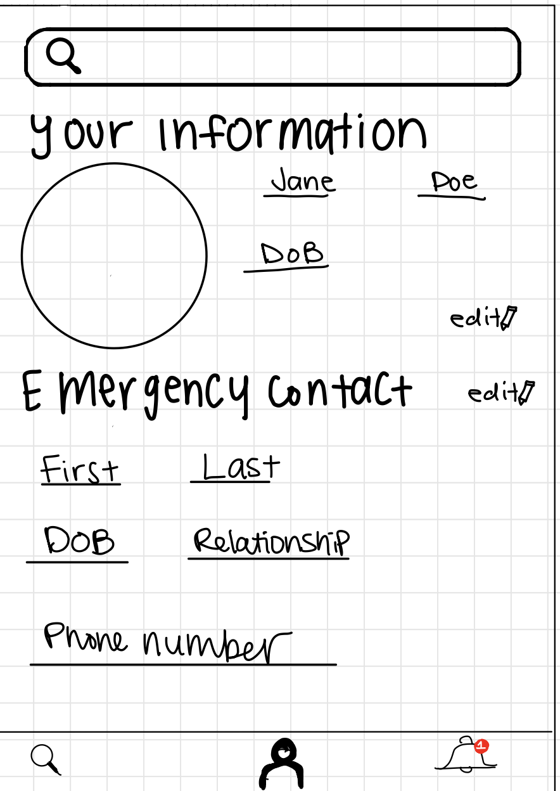
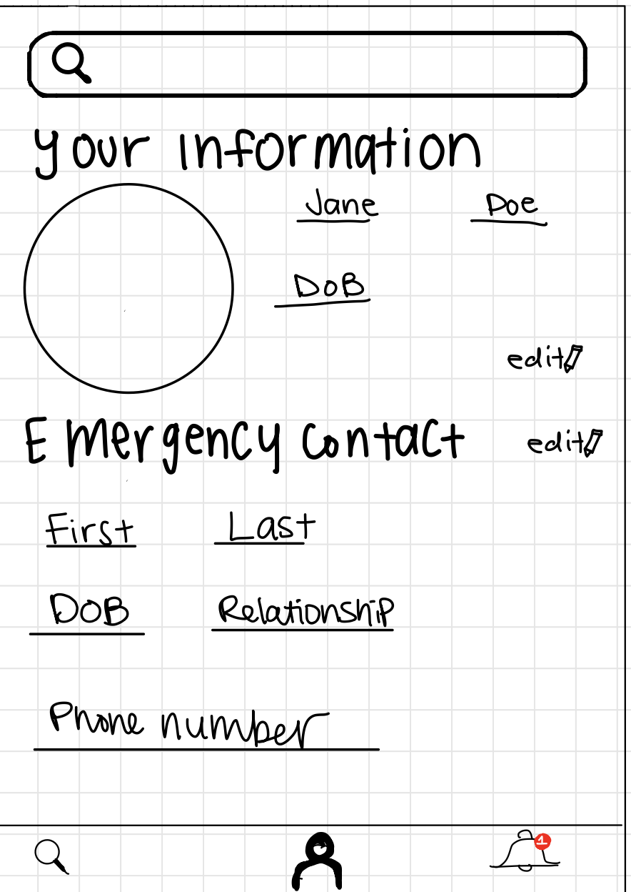
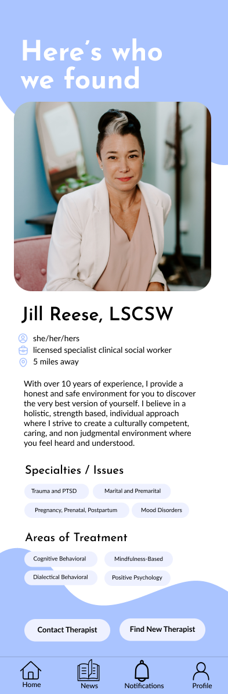
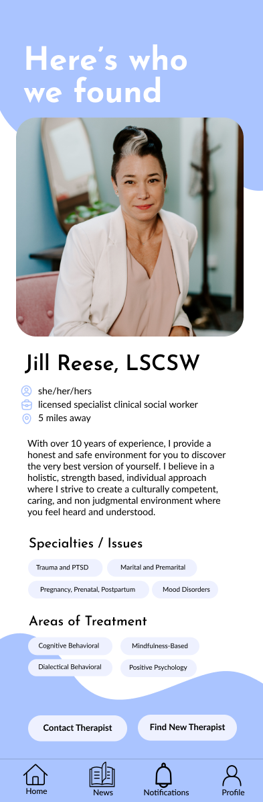
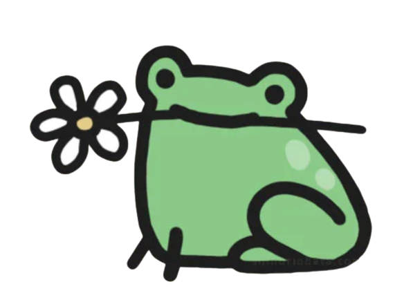

LunaJoy
Goal: To choose the right therapist!
Context
LunaJoy is a precision mental health platform that specializes in women's mental health through all phases of life including adolescence, pregnancy, postpartum, infertility, miscarriage, loss, perimenopause, and aging. The startup focuses on delivering care by creating a specialized workforce to provide targeted psychotherapy, medication management and genetic testing, coaching, and holistic wellness. Working in a team of four, we designed a LunaJoy mobile app for female-identifying individuals to manage their mental health and to find the right help they need. We believe these users would be most impacted by our app because of our focus on the unique health issues that female-identifying individuals experience through their different phases of life. More information about LunaJoy can be found here.
Objective
Our aim was to make an app for LunaJoy in which users can schedule a new appointment after matching with a therapist, check off completed medication, and read trending news without difficulty, utilizing feedback from user testing.
Idea #1 - Lo-Fi Prototype
We first made sketches of what we individually thought the app should look like:


 



We then combined these sketches into our first design:

Based on information gathered from the survey, users would be matched with therapists. Users are redirected to a match with therapist page, in which users can view the profile of their match. Users can then accept the match or opt to find another therapist.
Idea #2 - Hi-Fi Prototype
We then created our second design:


 

Testing & Considerations
We then received critiques on our second design through a group session of our peers.
- - It was initially difficult to navigate the different pages, especially navigating from the 'Questionnaire' page to the home page. Having a navigation bar on every screen would have made the navigation process more intuitive.
- - Having an indication of the number of days that elapsed after the last period would have been helpful.
- - It would have been beneficial to have a check mark on medications after a user had taken them.
- - Our 'Learn more about your cycle' link on the home page initially redirected users to the 'News' page, which resulted in confusion.
- - It would have been helpful to have the questions appear one at a time instead of all of them appearing on the same page.
- - It was suggested that we included labels on the icons in our navigation bar to provide further clarity.
We also did user testing with three testers on UserTesting.com. We gave them these directions:
Introductions:
Imagine you are a woman in need of a new therapist. Please schedule a new appointment with a new therapist by following the directions in the app. To start, find and click the “Schedule new appointment” button. Note that this is not an actual website but an interactive mockup made on prototyping software — not all the screens are complete.
Tasks:
- 1. Fill out the questionnaire [Success: Yes, No] [5-point rating scale: Very difficult to Very easy]
- 2. Match with a new therapist and contact them [Success: Yes, No] [5-point rating scale: Very difficult to Very easy]
- 3. Find the trending news and read them [Success: Yes, No] [5-point rating scale: Very difficult to Very easy]
Questions:
- - What frustrated you most about this site?
- - If you had a magic wand, how would you improve this site?
- - What did you like about the site?
- - How likely are you to recommend this site to a friend or colleague (0=Not at all likely, and 10=Very likely)?
In summary, the users thought the interface was aesthetically pleasing and easy to use, particularly the tasks in which they could easily find the button and the tab necessary to easily and successfully complete the tasks to schedule a new appointment and read trending news. For the task of checking off completed medication, however, users found it to be more difficult because it wasn’t clear how to check off medication, with most of them recommending that check boxes be added next to the medications to make the task more intuitive, especially for first-time users.
Final Design
The final app can be found here.
Final Choice
Thanks to this technology, I chose to pick a toad as my therapist. Ribbit!